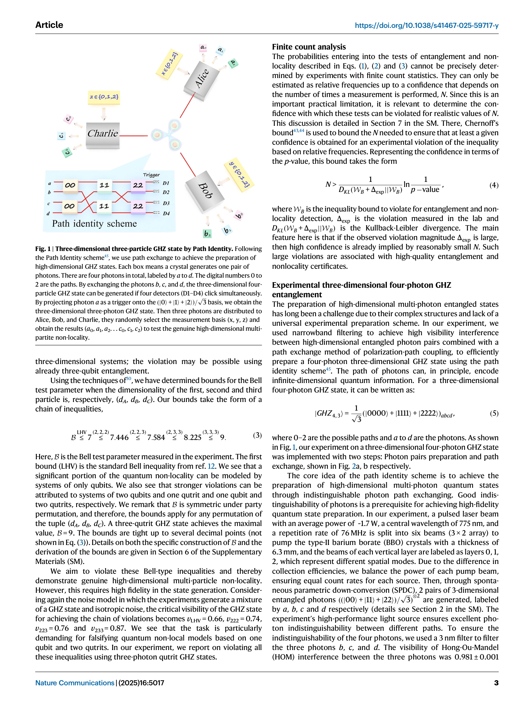
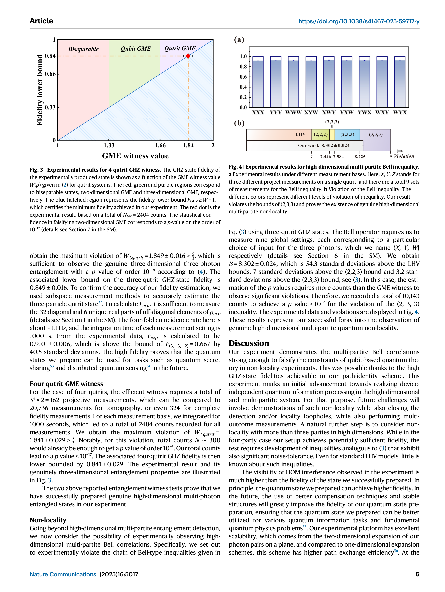
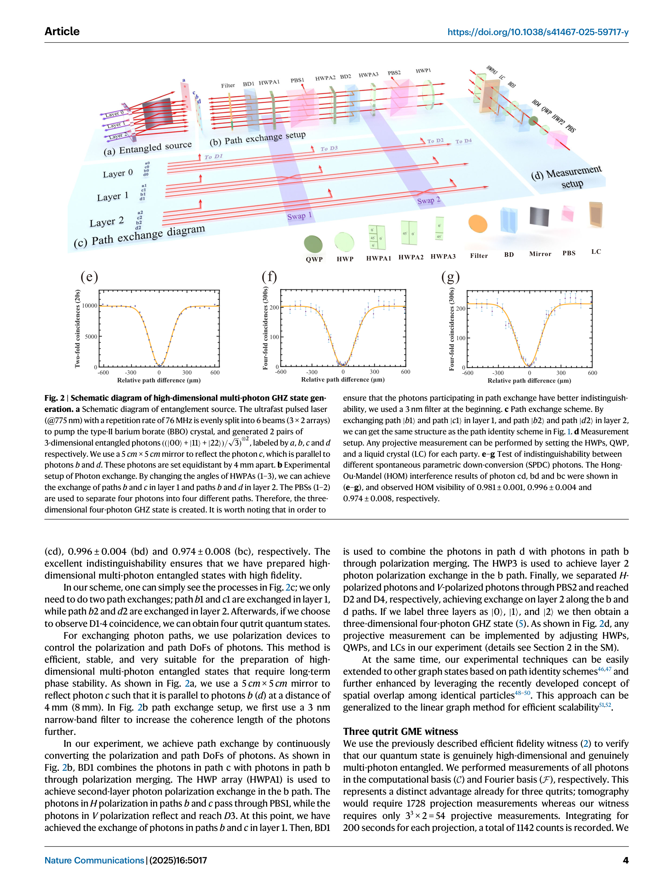

저자: Xiao‐Min Hu, Cen-Xiao Huang, Nicola d'Alessandro, Gabriele Cobucci, Chao Zhang, Yu Guo, Yun‐Feng Huang, Chuan‐Feng Li, Guang‐Can Guo, Xiaoqin Gao, Marcus Huber, Armin Tavakoli, Bi‐Heng Liu | 날짜: 2025-05-30 | DOI: 10.1038/s41467-025-59717-y

Fig. 1 | Three-dimensional three-particle GHZ state by Path Identity. Following
경로 자유도(path degree of freedom)를 이용하여 3-4개 광자의 고차원 다중입자 GHZ 상태를 생성하고, Bell 부등식 위반을 통해 고차원 다중입자 비국소성(non-locality)을 처음으로 실험적으로 관찰했다.

Fig. 3 | Experimental results for 4-qutrit GHZ witness. The GHZ-state fidelity of

Fig. 2 | Schematic diagram of high-dimensional multi-photon GHZ state gen-
총평: 이 논문은 고차원 다중입자 양자 비국소성의 첫 실험적 관찰을 이루었으며, path identity 기법과 차원 특화 Bell 부등식이라는 창의적 접근으로 높은 과학적 가치를 가진다. 다만 기술적 확장성과 실용적 노이즈 저항성 개선이 후속 과제로 남아있다.